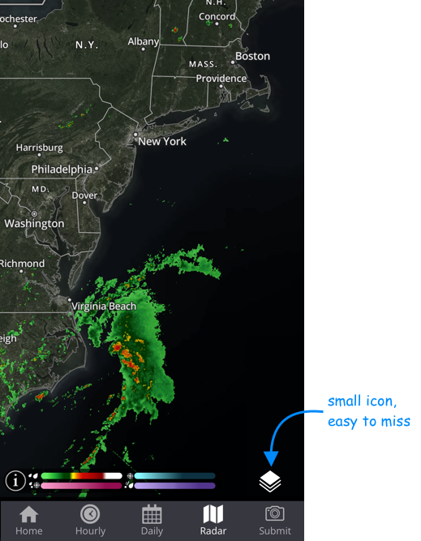
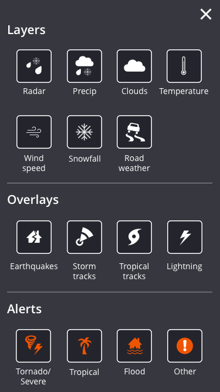
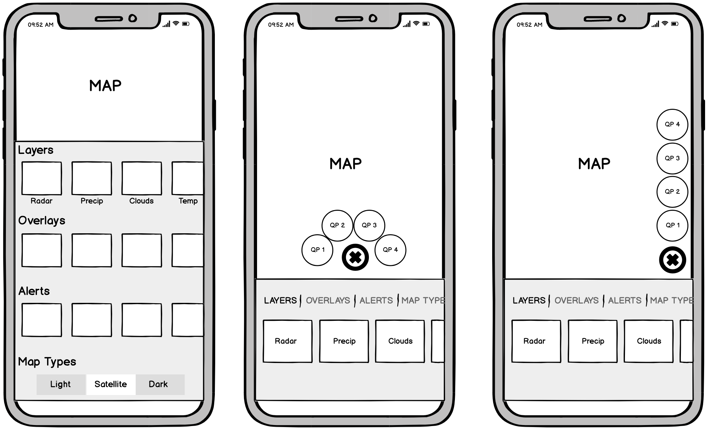
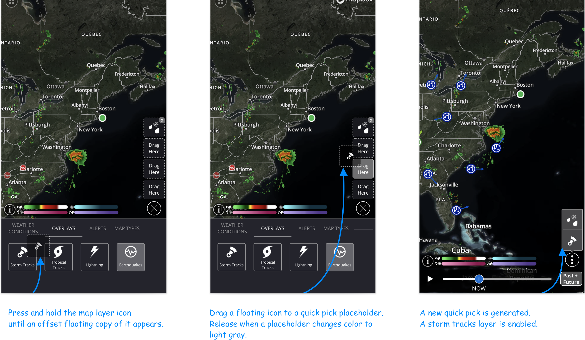
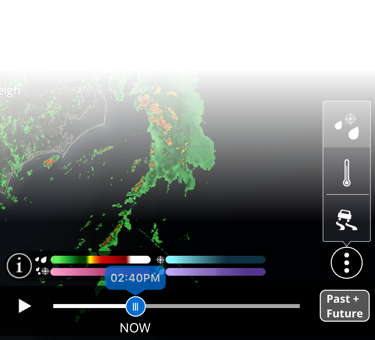
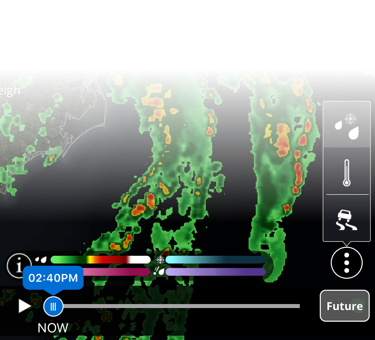
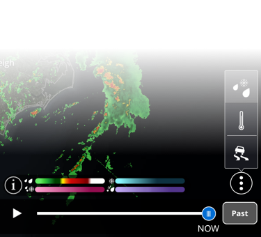
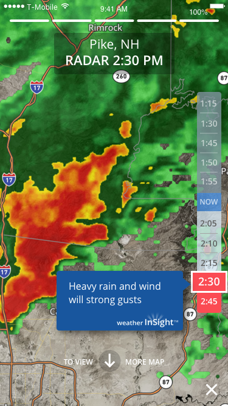
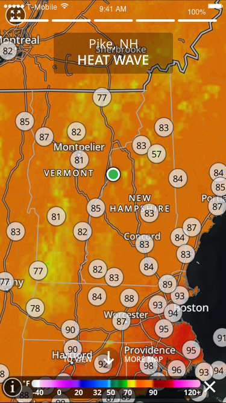

March 2018 – November 2018
Case Study
Enhanced Interactive Map Experience
In 2018 our team was adopting a new map SDK product developed by The Weather Company internal SDK team. The new SDK was exciting as it offered new weather data visualization and rendering possibilities on top of the existing options.
Everybody on our team was so excited about this new SDK, with its robust and powerful feature set, and we wanted our users to be as enthusiastic and pumped up as we were! On reviewing app traffic analytics we saw little interest in the existing weather map. We had to reinvent the outdated map UI, leveraging the new backend technology, in order to drive users to the map page and train them to dive deeper into the experience.
Problem Statement
Users rarely visited the map page and, according to analytics, almost none were exploring the map visualization layers. The map UI was outdated and not optimized for delightful exploration.
Goal
USER-FOCUS: Provide an engaging and fun experience enabling users to explore the numerous map visualization options, turning them into weather enthusiasts!
BUSINESS GOAL: With increased traffic and user engagement, a map page that displays video and static banner ads will generate more revenue for the station.
My Role
- Collaborate with product manager, meteorologists, data scientists, iOS and Android developers and QA engineers.
- Facilitate brainstorming and white-boarding sessions with stakeholders
- Research competitive weather app map solutions
- Translate ideas into design concepts
- Lead the UX exploration phase; build out wireframes
- Lead the visual design phase; deliver high-fidelity screens
- Conduct user testing and roll back users' feedback into production
- Deliver visual & technical specs to development team
- Conduct visual QA and provide feedback to development team throughout implementation
Original Map interface
The Map Layers button was small and barely visible against the busy map image. The Map Layer Editor was taking up the entire screen, taking the user out of the map experience.


Wireframing
While researching competitive solutions I observed that some weather apps had default shortcuts for map layers that a user could instantly see and interact with in order to explore map visualization layers. I thought it was a great idea and wanted to incorporate it into my proposed solution.
I also thought that a carousel of map options that took just a part of the map page would be practical and engaging as it would give the user a chance to observe each visualization layer right on the map as he/she tapped on different map options.

Prototyping
The app ships with three default quick picks. The user can customize them later or delete the quick pick set entirely. Deleting, creating or replacing a quick pick is intuitive. To create a new quick pick a user can drag and drop a desired layer icon over an empty quick pick placeholder. A user can delete a quick pick by tapping on the delete icon in the top right corner.

Radar Timeline Animation Redesign
Most weather apps were offering radar timeline animation in two modes only: observed (PAST) data and forecasted (FUTURE) data.
Our team was inspired to innovate and we developed a third option: a combo of both PAST + FUTURE. A user can toggle through PAST, FUTURE and PAST + FUTURE options. The PAST + FUTURE combo provides a continuous radar timeline animation experience



Redesigned User Experience
Once all designs were finalized and vetted by stakeholders I worked closely with iOS and Android engineers to implement the solution per design specs on both platforms.

Results
According to the analytics the use of map layers went up but not as much as we had hoped for. It seemed that users were intimidated by the complexity of the map features and shied away from exploring. We did notice that users interacted with the default shortcuts: radar (precipitation), satellite, and temperature.
Bringing Map Experience into Weather InSight
The modest results of our efforts inspired the idea of bringing map layers into our new weather app Weather InSight. But instead of inserting the whole map experience we "peel off" and present an isolated layer of the most impactful weather condition. The user can tap on a link to access the full map experience.

